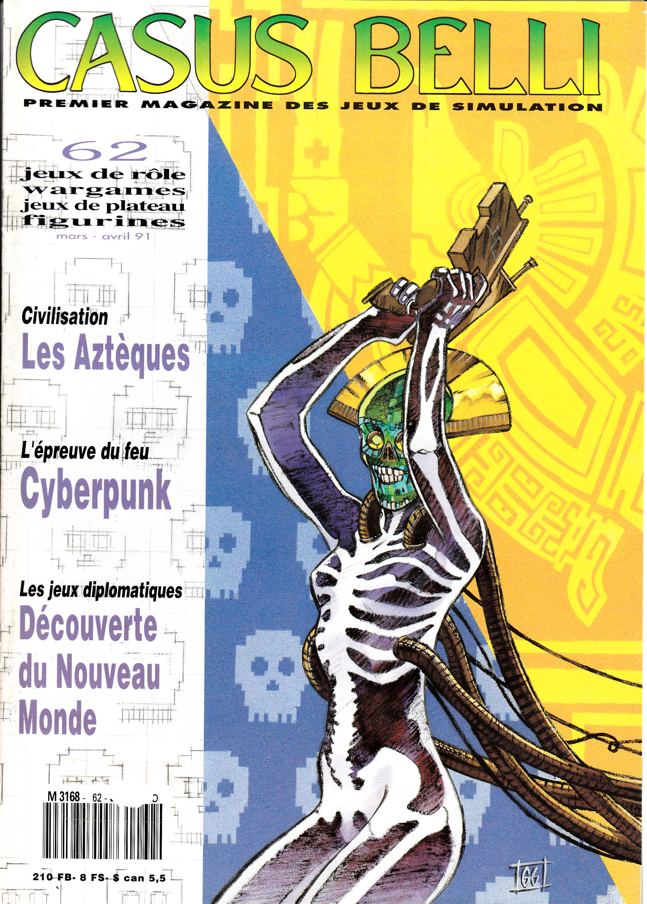
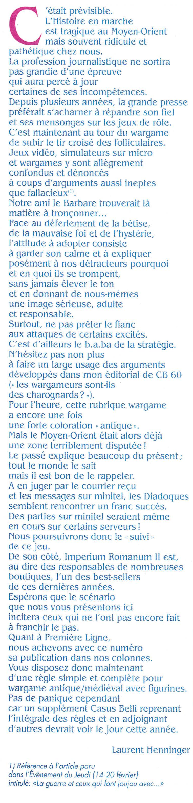
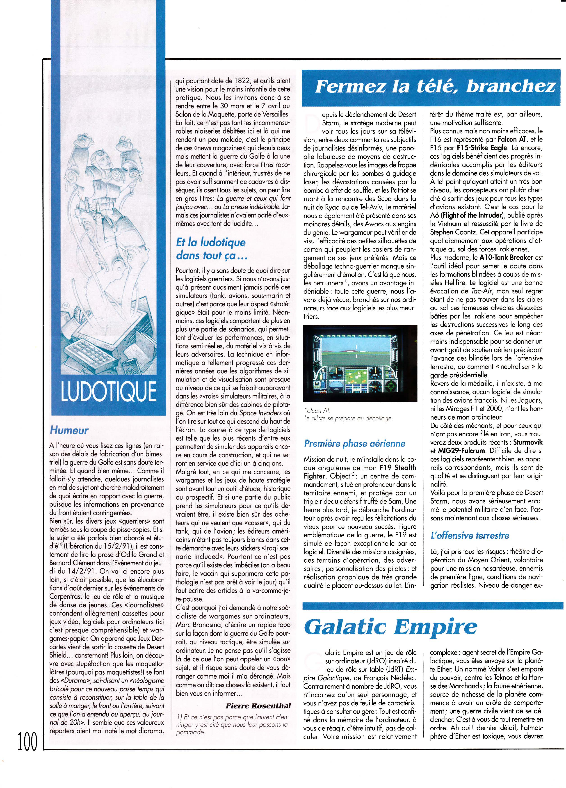
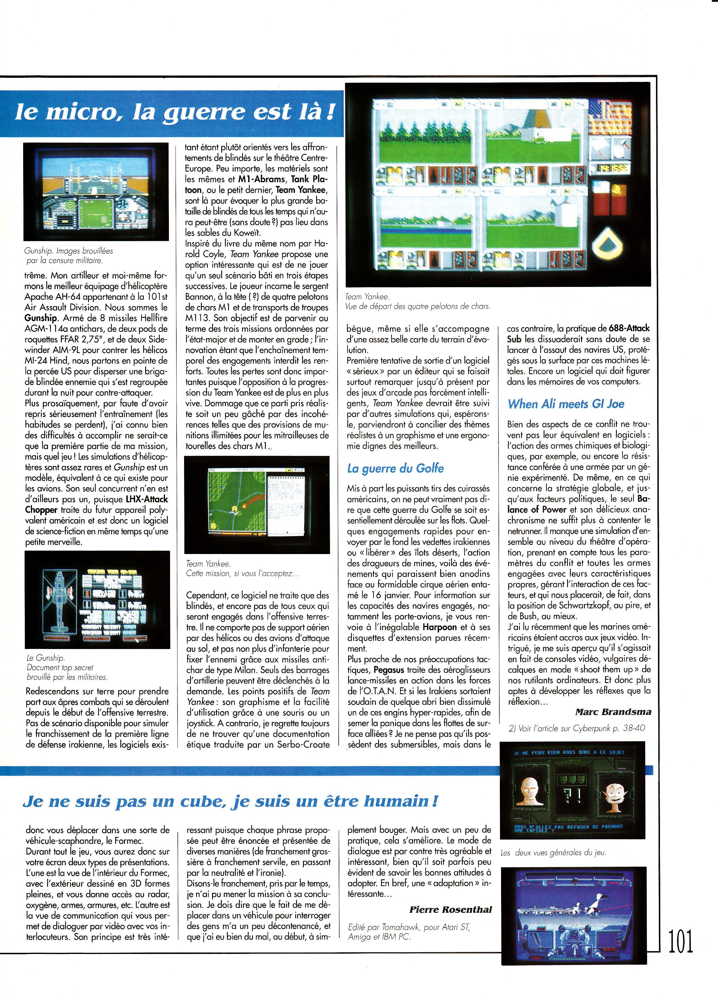

On continue dans notre année 1991 avec le Casus 62. Les beaux jours reviennent mais ils vont être trompeurs, avec une situation politique et économique qui se délite en France (mais on en parlera davantage au prochain numéro). Et pendant ce temps-là, dans le monde, comme un air de déjà vu ou au contraire de vue presciente… Même si la Guerre du Golfe a officiellement débuté et fini le bimestre dernier, le monde retient encore son souffle dans ce conflit régional, mais passé à l’échelle planétaire avec les forces en présence. Les troupes américaines pourtant commencent à évacuer en masse dès le mois de mars.
Ailleurs, c’est le début des sales guerres en Afrique, avec la guerre civile au Sierra Leone à l’ouest qui va précipiter la région, tandis qu’à l’est, c’est bientôt la Somalie qui va sombrer. En Amérique du Sud, inspiré par ce qui est encore que la CEE avec 12 Etats membres, le Brésil, l’Argentine, le Paraguay et l’Uruguay fondent un certain Mercosur, dont notre actualité récente a rappelé qu’il est toujours en existence, malgré les fragilités et les dissensions économiques de ces pays.
C’est d’ailleurs déjà le cas pour l’Argentine en ce début 1991 avec la présidence Carlos Menem qui arrime la monnaie nationale sur le dollar, et coupe drastiquement les dépenses dans la fonction publique. Plus au nord, sur des Etats-Unis encore très impliqués au Proche-Orient, l’autre actualité de ce bimestre est surtout marquée par une vidéo amateure qui fera le tour du monde, même si on n’a pas encore de téléphone pour enregistrer et de réseau social pour diffuser : le tabassage de Rodney King par des policiers de Los Angeles.
Cet événement qui va mener aux émeutes de Los Angeles l’année suivante retrouve aussi un écho en France à la même période, avec les émeutes urbaines à Sartrouville à la Cité des Indes après le meurtre d’un jeune par un vigile. Après Vaulx-en-Velin six mois auparavant, c’est maintenant la banlieue parisienne qui s’embrase, et les tensions dans les Cités qui viennent occuper de façon récurrente maintenant les actualités nationales.
Je termine mon tour de l’actualité et de la planète avec nos voisins européens, ou plus précisément nos nouveaux voisins, avec toute la partie Europe de l’Est. Cela commence avec l’URSS, encore existante, mais qui entame son processus final de désagrégation avec le référendum du 17 mars pour répondre à la question suivante : « pensez-vous qu’il est essentiel de préserver l’URSS sous forme d’une fédération renouvelée de républiques souveraines et égales où les droits et les libertés de chacun, quelle que soit la nationalité, seront pleinement garantis ? ». Si le oui l’emporte largement, on notera que six républiques aient refusé de participer, et qui seront les Etats qui tenteront de prendre le plus de distance avec l’ogre Russe dans les mois à venir : Estonie, Lettonie, Lituanie, Moldavie, Arménie, Géorgie. Ceci devait transformer l’Union des Républiques Socialistes Soviétiques en Union des Républiques Souveraines Soviétiques au mois d’août 1991, mais les événements de l’été de cette année feront définitivement avorter ce projet.
Autre fédération qui bat alors de l’aile, pour ouvrir une ère malheureusement sanglante, c’est la Yougoslavie et le sentiment nationaliste serbe, à l’écho du grand frère russe. Face à une Croatie qui s’éloigne de plus en plus de l’entité Yougoslave, les minorités serbes installées créent des régions autonomes, d’abord à l’Est de la Croatie, et puis au Sud dans ce qui va devenir ensuite la République Serbe de Krajina. Il n’est pas encore question de Bosnie, Sarajevo ou Kosovo mais cette tragédie européenne qui va plomber la décennie 1990 commence à se mettre progressivement en place.
On ouvre maintenant le Casus 62 sous une couverture de Eric Gutierrez

On commence par l’édito de Joe Casus et Annabella Belli qui se félicitent de l’excellente santé et dynamisme du loisir puisque pas moins de 5 pages sont occupées par les annonces de manifestation, aidées il est vrai par les gros événements à venir, le traditionnel Salon des Jeux de Réflexion du mois d’avril ou le redémarrage des GN grâce aux températures plus clémentes. Pour ces derniers, un petit clin d’œil personnel pour @Tristan puisque j’y ai vu le premier Dédales annoncé.
En plus de ces pages richement fournies, on trouve aussi des publicités pleine page pour le Championnat de France de Wargame 1991, le début d’un Championnat de France sur le jeu de plateau Zargos, et deux pages de débriefing d’événements passés avec notamment le Championnat de France (encore !) de Diplomacy ; ou encore le record battu et validé de la plus longue partie de JDR en continu avec 83h jouées !
Pas de courrier des lecteurs pour ce numéro mais quelques autres informations : un droit de réponse de Flamberge suite à la critique sanglante (oui Tristan, comme toi il y a 35 ans, je m’en serai voulu de ne pas la faire) de Prédateurs dans le précédent numéro, et l’annonce de l’enregistrement par l’encore existante chaîne La 5 d’une émission sur les jeux de rôle dans le programme Ca vous regarde. Comme l’émission sera diffusée avant la parution du prochain Casus, je profiterai de ce fil pour faire une parenthèse après spécialement consacrée à cet événement télévisuel qui mérite qu’on s’y arrête.
Enfin, en parallèle de cet événement télévisuel à venir, est aussi annoncé la sortie prochaine au cinéma du long-métrage Akira, alors que la culture manga via les émissions jeunesse commence à prendre en forme : le Club Dorothée est en effet maintenant bien installé, et les articles sur les japoniaiseries et la culture de la violence qui menace la jeunesse ne vont pas tarder à éclore.
Je ne la mentionne sinon jamais mais je pense que je vais y revenir un peu plus souvent, c’est la rubrique Zines que Tristan reprend avec ce numéro, et donc j’ai toujours trouvé le ton plus en accord que les remarques acerbes ou injustes que pouvait faire son prédécesseur André Foussat, sur ces productions certes inégales mais en général conçues avec ferveur.
Il est temps d’aborder maintenant sur les sorties du bimestre avec forcément du matériel sur la partie francophone, proximité du Salon des Jeux de Réflexion aidant : la VF de la 2ème édition de Cyberpunk chez Oriflam et qui est critiquée en longueur dans ce numéro, le jeu de plateau Vertigo chez Eurogames (dont je vais vous reparler aussi plus tard). Flamberge publie l’écran pour Prédateurs et arrête la distribution de ses jeux pour la passer à Hexagonal : c’est le début de la fin. En définitive, ce sont surtout Descartes et Siroz qui trustent la rubrique de ce numéro en publiant, à l’instar de TSR, un calendrier copieux de leurs sorties pour tout 1991.
Plutôt que d’en reprendre le détail fastidieux, je vais juste relever quelques perles savoureuses. Chez Descartes, c’est ainsi la première mention du Voile de Kali pour Maléfices, même si un prudent sans date pour l’année est indiqué. Idem avec SangDragon pour Simulacres mais ici prévu pour mai, et toute une autre flopée d’univers qui ne paraîtront jamais : Le Crépuscule des Etoiles ou Western, et Animonde même si l’espoir de ce dernier persistera encore quelques années.
Ceux qui auront été agacé en attendant la sortie de la VF d’Arkham chez EDGE auraient apprécié de le voir chez Descartes peu après le Salon des Jeux de Réflexion, et seulement une petite année après sa parution en VO… Du côté de Siroz, on notera un Concrete Jungle pour Heavy Metal dont l’échec patent le condamnera rapidement, ou un mystérieux Guide des pouvoirs pour INS / MV qui restera finalement dans la bibliothèque d’Yves pour l’éternité.
On passe sur la VO. Pour CoC chez Chaosium, on continue dans le Pays de Lovecraft avec Return to Dunwich et Dark Desgins pour Gaslight, malheureusement jamais traduit ? FASA annonce son Guide sur l’Amérique du Nord pour Shadowrun, et dans cette lignée annonce également une production de sourcebooks locaux pour les Allemands, les Britanniques, et comme on est dans les Serpents de Mer les Français, les Italiens et les Espagnols… Talsorian continue pour sa part de surfer sur la vague Cyberpunk depuis sa seconde édition avec les annonces du premier (d’une trop longue série) Chromebook, et le guide de Night City ; il est aussi question de la prévision de la parution chez cet éditeur du jeu de rôle Amber pour la Gen Con 1991…
Pour finir, le calendrier de parution de l’année a enfin été récupéré de chez TSR où on peut constater le développement maintenant très diversifié des différents univers pour AD&D2 : Spelljammer ou Greyhawk qui continuent, Dragonlance qui reprend, Ravenloft qui se lance, et Dark Sun qui va apparaître ; l’éditeur de Lake Geneva tente aussi de se diversifier ailleurs que dans (A)D&D avec Marvel Super Heroes ou Buck Rogers, grâce ou à cause de l’héritage personnel de Lorraine Williams. Et surtout, il est aussi enfin question de reprendre et de diffuser la 2ème édition en VF d’AD&D (même si le travail sera fait par des Canadiens…) après maintenant un an et demi d’absence du marché français. Je m’autorise une rapide aparté pour relever qu’après le démarrage très retardé et très progressif du plus célèbre Jeu de Rôle en France (la première traduction complète ne sera arrivée qu’en 1983), c’est la deuxième période « d’extinction de masse » de la licence, ce qui a certainement continué de favoriser la création et l’originalité française en termes de JDR, et dont on s’enorgueillit à raison. On pourrait en dire de même de la 5ème édition avec les soubresauts chaotiques de BBE et Asmodee, mais je referme la parenthèse au risque de dériver.
C’est à peu près tout outre-Atlantique, signe de la période encore calme en sorties et d’un essoufflement similaire au marché français. Ainsi ICE (l’éditeur, pas les factieux aux ordres de Trump) qui avait été jusqu’ici très prolifique sur ses différentes gammes commence à sérieusement ralentir. Cela laisse donc la place à des nouveaux venus, encore timides, à l’instar de White Wolf dont Vampire n’est pas encore annoncé mais qui commercialise un produit anecdotique, les Story Path, inspirés des Cartes des Possibilités dont TORG a fait l’innovation.
Petite revue des critiques toutes plus intéressantes les unes que les autres sur les différents matériels de ce numéro. Sur les jeux de Plateau on remarquera le très réussi et très technique (et très long) Republic of Rome, qui deviendra Res Publica lorsqu’il sera traduit par Jeux Descartes un peu plus tard ; ou Vertigo, qui rappelle que l’écologie était déjà une préoccupation sociétale il y a 35 ans et dont on redécouvre les noms de ses concepteurs : Sylvie Rodriguez qui est alors un nom connu et Philippe des Pallières, qui est un nom beaucoup moins connu (surtout pour Armada), et qui le sera bien davantage quand sortira Les Loups-garous de Thiercelieux.
Sur la partie Jeu de Rôle, on retrouvera l’inénarrable Buck Rogers de TSR dans sa première mouture déjà luxueusement fournie, puisqu’il connaîtra des éditions ultérieures malgré son manque de succès évident (et ce qui fera persifler jusqu’au sein de TSR que même si le public n’en voulait pas, ce jeu continuerait à sortir jusqu’à ce qu’on l’achète). Aquelarre chez nos compatriotes espagnols, est critiqué grâce au Docteur Stora qui, non content d’être médecin / wargameur / rôliste, parle aussi couramment l’espagnol. Il y a des gens comme ça qui énervent !
Tristan pour sa part nous fait une critique du Watchmen Soucebook pour DC Heroes, toujours un supplément d’anthologie ? et de la Terre Vivante pour TORG avec un avis très positif même s’il nous a confié ici que ce n’était pas spécialement son cosm de prédilection. Pour ces deux critiques, vous pouvez les relire sur le GROG puisque Tristan a autorisé qu’elles soient reprises :
- https://www.legrog.org/jeux/torg/terre-vivante-fr#0
- https://www.legrog.org/jeux/dc-heroes/watchmen-sourcebook-en
Après les Entrées, les Plats de Résistance. D’abord l’Epreuve du Feu de la VF de Cyberpunk par Pierre Lejoyeux : pour rappel, il s’agit de la 2ème édition américaine qui décale le décor de jeu de 2013 à 2020 (les fameuses Années Noires), mais de la première VF pour un jeu qui restera particulièrement icônique malgré tous ses défauts. Pierre ne manque pas ainsi de relever son système très siloté avec ses professions pas bien éloignées du carcan des classes de personnage de (A)D&D. La VF n’est elle-même pas exempte de tares dûes à une sortie trop rapide, surtout que le livre en couverture souple a crevé le plafond des 200 FF (il est vendu alors 237 FF), qui est encore le standard de ce début des années 1990.
La critique est copieuse : pour mieux illustrer son propos, Pierre produit un exemple via une création de perso avec Gladys « Piece of Cake » Gallagher, qu’on retrouvera aussi dans le scénario en encart. Pierre se tente également à de la prospective pour juger de la pertinence des Années Noires, et perçoit remarquablement notre décennie 2020 actuelle : présence des IA, violences urbaines ou montée de la puissance des entreprises de taille mondiale, tout en remarquant qu’en revanche la cybernétique est en comparaison à un stade embryonnaire (et qu’elle n’aura carrément pas rattrapé son retard 30 ans après). En revanche, on souscrira peut-être moins avec nos mentalités actuelles à son avis que le jeu est ambigu puisque les ennemis sont moins manichéens que dans des jeux d’imaginaire pur comme le med-fan… Pierre Rosenthal complète enfin cette Epreuve du Feu avec une revue rapide des autres propositions Cyberpunk, et un comparatif rapide puisqu’il s’agit maintenant d’un genre à part entière, qui est décliné de façon ludique de plusieurs façons.
Suit ensuite un Mini-Portrait de Famille avec les Galaxy Guide de Star Wars où on savourera le style irrévérencieux de CROC puisqu’il est l’auteur de l’article. Le Portrait est limité pour l’instant aux 5 premiers alors parus, soit un Guide par film de la Trilogie, et le supplément sur Yavin & Bespin, et celui sur les Alien Races. A lire pour la prose de mister CROC, et aussi parce que c’était du bon matériel hein @legnou ?
On peut basculer ensuite sur l’encart scénarios avec la sélection suivante pour ce numéro :
• Les Lumières de la Ville de Patrick Leclerq et Pierre Lejoyeux pour Cyberpunk, qui fait office de scénario d’introduction dans la continuité de l’Epreuve de Feu, un peu comme Casus le faisait systématiquement avant. Pas vraiment original car il se compose de rencontres successives, mais il mérite justement son coup d’œil si vous voulez présenter les différentes facettes du genre Cyberpunk, et des jeux assimilés, vers des novices. Notamment si vous êtes resté sur votre faim avec les différents Kits de Démarrage publiés lors de la réédition RED du jeu.
• Le Masque Utruz de Denis Beck pour AD&D, repris dans le Recueil de BBE et qui se déroule à Laelith, mais en partie car c’est un curieux mélange entre un scénario finalement assez standard avec son donneur d’ordre et sa quête à accomplir, et un étrange voyageur échappé d’un scénario de l’Appel de Cthulhu. Personnellement, le mélange de Laelith avec l’univers de Lovecraft ne m’emballe pas spécialement. Mais cela n’a pas empêché BBE dans sa reprise de Laelith d’en faire même un supplément dédié avec Laelithulhu, voire de faire des mélanges encore plus improbables avec la Cité Sainte quand il a fallu l’intégrer avec Shadowrun… Pour en revenir au scénario, je le retiens donc surtout pour l’exercice de style proposé avec cette surprise de l’intrigue, et éventuellement comme un matériau intéressant à retravailler en substituant une Laelith bien trop typée à mon goût, pour un décor à concevoir dans les Contrées du Rêve. Celles-ci sont en effet tout aussi décalées pour faire du med fan like, et pour le coup inscrites dans l’œuvre de Lovecraft. Bref, la lecture m’a surtout inspiré pour tenter un jour cet exercice de style de partir d’un scénario med fan classique et glisser progressivement vers l’Appel de Cthulhu
• Hold-Up Galactique pour Star Wars de Jean Balczesak a du potentiel avec sa Station Impériale imprenable à tenter d’investir, et son alliance avec une crapule pour y parvenir, et les différents rebondissements qu’il propose. Je suis resté cependant sur ma faim car l’action des joueurs se limitent à se retrouver dans un jeu de quilles, complètement à la discrétion du PNJ principal. Il y a du potentiel, surtout avec la thématique d’Aux Confins de l’Empire, mais cela demanderait un très gros effort de développement. Peut-être que certains d’entre vous en ont eu une meilleure expérience ?
• La Mangeuse d’Ordures de Marc Deladerrière pour Simulacres Aztèques qui renvoie au dossier consacré à cette civilisation après l’encart scénario, et permet à Casus de proclamer fièrement qu’il propose grâce au système générique de Simulacres le premier jeu de rôle sur ce thème ! Cela me semble exact : l’antique GURPS Aztecs n’est en effet pas encore sorti, et surtout le scénario qui est proposé ici est de très bonne facture, très raccord avec l’ambiance exotique et décalée de cette civilisation, dont le dossier met bien en lumière la mentalité et les ruptures avec les sociétés occidentales qui forment encore la base des univers traditionnels de Jeu de Rôle. Ce scénario est certes de facture classique, mais il est solide et mérite son coup d’œil pour éventuellement l’adapter sur Sapa Inca, voire le transporter dans Pirate des Caraïbes ou Shadowrun avec Aztlan. Ou tout simplement le jouer avec Simulacres le temps d’une session, comme il a été écrit originellement.
On continue avec la partie rédactionnelle, copieuse et diversifiée pour ce numéro. Elle démarre avec une interview d’une page de Michael Moorcock par les GE Ranne, copieuse et instructive, notamment son rapport avec Stormbringer et Hawkmoon adaptés de ses œuvres, très très lâche comme avec la cohérence de l’univers de ses romans. Mais au moins Moorcock fait partie de cette catégorie d’artistes à laisser les rôlistes reprendre et au besoin tordre ses créations, sans que cela ne l’émeuve un instant.
Je passe rapidement sur les deux aides de jeu proposées. D’abord les règles de campagne pour SimulacreS qui continuent à complexifier des règles (localisation des blessures…) que Pierre Rosenthal a depuis drastiquement re-simplifiées. Ensuite une double aide de jeu pour TORG par Anne Vétillard sur les deux innovations du jeu, et dont seulement la première sera reprise (en bien mieux) dans l’édition actuelle : des conseils sur les Cartes des Possibles, et un coup de projecteur sur les Chroniques de TORG, qui à l’instar de COPS et de Ground Zero, faisait évoluer l’univers avec un fascicule édité au fur et à mesure du développement de la gamme. Etrange alors que nos possibilités de partage en réseau ont explosé de façon exponentielle que la version actuelle du jeu n’ait pas tenté de reprendre cette autre innovation.
Le dernier morceau est le plus copieux, à savoir un dossier sur la civilisation Aztèque afin de compléter le scénario SimulacreS en encart, et un Bâtisse & Artifices au diapason consacré à la capitale Tenochtitlan avant l’invasion des Espagnols. On est dans la grande époque où Casus permettait de montrer fièrement à ses aînés dubitatifs que le JDR était aussi moyen de se cultiver, et pas seulement mettre des coups de latte à des gobs et des orcs. Les deux articles, le premier sur la Civilisation Aztèque de Marc Deladerrière, et celui sur Tenochtitlan de Brigitte Brunella – dont on sait maintenant que c’était un des pseudos de Jean Balczesak – sont tout bonnement denses et excellents, quand on se rappelle la difficulté d’accéder aux ressources documentaires en cette époque pré-Internet.
On passe sur les jeux de plateau avec deux articles et un dossier dans la thématique Découverte du Nouveau Monde. Le premier est sur Fantasy Warriors, tentative du fabricant de figurines Grenadier de détrôner Games Workshop et son Warhammer Battle qui n’en est pas encore à sa 17ème édition : CROC croit en ce projet et en ce jeu, moche mais aux règles plus solides et qui introduit des figurines en plastique pour pouvoir jouer avec la boîte de base. Trente-cinq ans plus tard, on sait comment cette tentative (et les suivantes comme Demonworld ou Confrontations) s’est terminée avec un Games Workshop coté à la Bourse de Londres, et qui représente même une de ses grosses capitalisations…
On passe ensuite sur La Vallée des Mammouths revu par Pierre Rosenthal, avec une critique très descriptive et technique du jeu. Enfin, Casus fait une revue sur 3 jeux en VO plus ou moins récents pour l’époque, en relation avec le dossier précolombien : Conquistador, Viceroys, et New World. Il s’agit d’une sorte de Risk pour chacun d’entre eux, avec des mécanismes beaucoup plus aboutis, et dans un contexte historique réel.
On arrive maintenant à la rubrique Wargames, et même si on n’est plus dans le contexte de l’Affaire de Carpentras (qui n’est absolument pas résolue à cette date d’ailleurs), la Guerre du Golfe relance la mauvaise réputation des jeux de simulation. Laurent Henninger s’en était déjà ému dans le numéro 60 mais ces critiques n’étaient pas encore véhiculées dans la presse grand public. C’est désormais chose faite, ce qui nous vaut un nouvel édito courroucé que je vous reproduis ici.

Cela fait surtout amalgame avec l’image négative déjà initiée avec Carpentras même s’il ne s’agit ni des mêmes loisirs, ni des mêmes causes. Ceci ne va pas aider pour la suite des années 1990, et servir de terreau pour les émissions lamentables qui suivront quelques années après, sur le principe désolant qu’il n’y a pas de fumée sans feu…
Je vais coupler ici avec la rubrique Ludotique où Pierre Rosenthal publie une humeur similaire, que je reproduis également ci-dessous, et le dossier de ce numéro se concentre largement sur les différents jeux informatiques éditées ou détournées pour simuler le théâtre de la Guerre du Golfe.


Après cette parenthèse, je reviens au reste de la rubrique Wargames, fournie et diversifiée à l’image du reste du magazine. Un peu de combat moderne pour mettre en avant la collection Modern Naval Battles, qui louche vers le jeu grand public à base de cartes ; la suite du dossier des combats de l’Antiquité avec de nouvelles règles pour Les Diadoques présentés dans le numéro précédent, et un scénario copieux pour Imperium Romanum II. Première Ligne n’était toujours pas fini, il reste un dernier chapitre publié dans ce numéro : les batailles fantastiques avaient déjà été abordées et Casus rajoute les options pour introduire les monstres issus de nos bestiaires favoris.
On termine le magazine avec les traditionnelles rubriques pour édifier notre culture. D’abord la partie SF de Roland Wagner où je mettrai en lumière pour ce numéro La Grande Anthologie de la Science-Fiction célébrée par Roland, après qu’elle ait introduit dans son dernier volume de la SF française, mais aussi travail titanesque pour avoir balayé des centaines et des centaines de textes, et avoir opéré une rigoureuse sélection. A propos de SF française, Roland met aussi en lumière la dernière production de Jean-Marc Ligny avec son roman Yoro Si. On trouvera aussi Psychose 2 de Robert Bloch, la suite du livre qui a inspiré le célèbre film de Hitchcock et dont j’ignorai personnellement qu’il y avait une suite. Enfin, c’est aussi la sortie de Privé de Désert d’Effinger, suite de Gravité à la Manque qui décrit un décor Cyberpunk très décalé, mâtiné de civilisation arabo-islamique très documentée pour l’époque, et que successivement Cyberpunk et Di6dent reprendront pour adapter l’œuvre à un univers de JDR.
André Foussat met pour sa part en avant des BD soit issues de la littérature médiéval-fantastique comme l’adaptation du Cycle des Epées, soit elles-mêmes création originale med-fan mais fortement inspirées d’un genre fantasy qui commence à irriguer plusieurs territoires (clin d’œil à @Michel Mouton et au documentaire Le Triomphe de la Fantasy). Mais contrairement à un Légendes des Contrées Oubliées ou La Quête de l’oiseau du temps de Loisel, ou encore de Valmont, les titres mentionnés ne sont plus vraiment dans les mémoires : Hazel et Ogan, L’épée de Cristal, Allande… Même L’Autre Monde, première (?) BD illustrée par Florence Magnin n’aura pas particulièrement laissé son empreinte. Et l’hommage (mérité) qui est rendu à Marcel Gotlib au Festival d’Angoulême 1991, et dont André Foussat se fait l’écho dans cette rubrique (à brac), montre que le genre fantasy est encore très marginal, voire déconsidéré dans l’univers de la BD.
Enfin pas de Tristan Lhomme pour la rubrique Universalis de ce numéro, mais du Bruno Faidutti et du Laurent Henninger. Le premier vous recommande tous plein de romans (traduits heureusement) et d’écrivains d’Europe de l’Est, ce qui en fait une chronique déroutante pour ce numéro, mais pourquoi pas. En tant que doctorant préparant sa thèse d’Histoire, il conclue heureusement avec des lectures plus Historiques mais tout aussi pointues : Espions et Ambassadeurs au temps de Louis XIV (de Lucien Bély qui est son Directeur de Thèse) ou Les jeux au Royaume de France du Xième au XVème siècle qui rappelle que Bruno n’était pas seulement un Historien chevronné, mais aussi un des grands concepteurs de jeu de plateau à l’époque.
Tout aussi pointu est le livre proposé par Laurent : Le modèle occidental de la guerre. Je ne l’évoque pas tant pour l’ouvrage dont je ne saurai dire s’il a bien vieilli, que pour la mention sur laquelle Laurent conclue sa revue : « A l’heure où les USA et leurs alliés font tout pour se mettre le monde musulman à dos, la lecture nous ouvre tragiquement et tardivement les yeux : un gouffre semble s’ouvrir sous nos pieds, béant et moqueur… ». Agacement anti-américain primaire suite à la gestion de la Crise du Golfe, ou analyse prémonitoire d’un 11 septembre à venir dans encore dix ans et d’un monde qui persiste à nos jours ? Le débat est ouvert !
Et je conclue ici pour cette revue particulièrement dense de ce numéro qui mérite vous le dénichiez si vous en avez la possibilité ou d’être relu s’il dort tranquillement sur vos étagères !